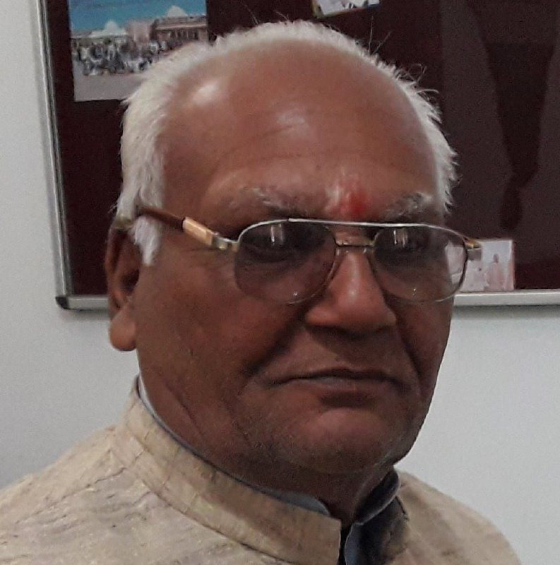
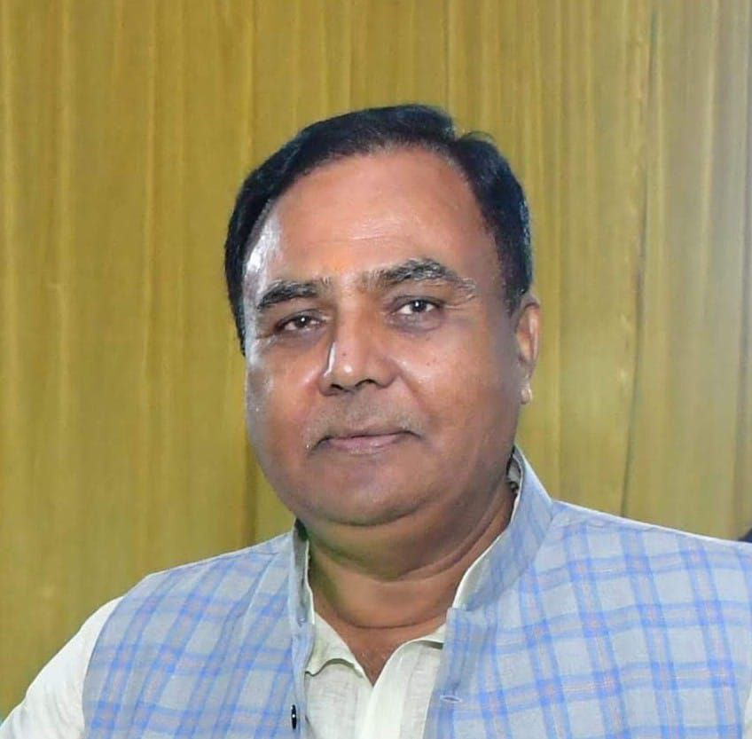
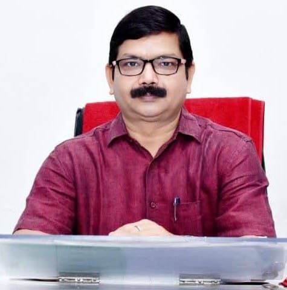
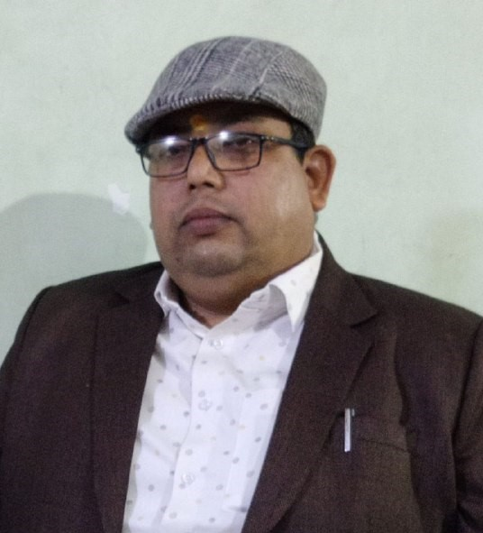

हमारे बारे में
सर्वोदय किसान पोस्ट ग्रेजुएट कॉलेज, कौड़ीराम, गोरखपुर जनपद मुख्यालय से 30 किलोमीटर दक्षिण, गोरखपुर वाराणसी राष्ट्रीय राजमार्ग के किनारे अनोमा अचरावती के दोआब में स्थित कौड़ीराम इस जनपद का महत्वपूर्ण व्यापारिक केंद्र होने के साथ- साथ उच्च शिक्षा जगत में भी महती भूमिका का निर्वहन सर्वोदय शिक्षा समिति कौड़ीराम के माध्यम से कर रहा है। आज से 76 वर्ष पूर्व सन 1949 में पूर्वांचल के "गोंधी" के नाम से विभूषित स्व० बाबा राघवदास की प्रेरणा से प्रख्यात स्वतंत्रता सेनानी एवं गांधीवादी विचारधारा के वाहक स्व० पारसनाथ राय द्वारा शैक्षणिक दृष्टिकोण से अत्यंत पिछड़े इस क्षेत्र में शिक्षा की जो एक छोटी सी ज्योति जलाई गयी थी, वह आज एक मशाल का रूप ग्रहण कर इस पूरे क्षेत्र को प्रकाशवान एवं ऊर्जित कर रही है। अन्य डिग्री कालेजों के दूरस्थ होने से आर्थिक रूप से पिछड़े बहुसंख्यक परिवारों के बीच इंटरमीडिएट के बाद शिक्षा ग्रहण करने में असमर्थ हो जाते थे। सर्वाधिक परेशानी छात्राओं के लिए थी, जो अनेक कठिनाइयों के बावजूद इंटरमीडिएट के बाद शिक्षा ग्रहण करने हेतु घर से बाहर जाने के लिए विवश थी।
क्षेत्रीय आवश्यकताओं की पूर्ति हेतु तथा अभिभावकों की भावना का समादर
करते हुए सर्वोदय शिक्षा समिति द्वारा डिग्री कॉलेज की स्थापना का
निर्णय लेकर अगस्त 1996 से ही अपने प्रयासों को मूर्त रूप देना
प्रारम्भ कर दिया गया। डिग्री कॉलेज की स्थापना से जुड़े महानुभावों की
निष्ठा, लगन एवं परिश्रम के परिणाम स्वरूप महामहिम राज्यपाल महोदय ने
जुलाई 1997 से इस कॉलेज को दीनदयाल उपाध्याय गोरखपुर विश्वविद्यालय से
सम्बद्धता प्रदान कर दिया। वर्ष 1997 से ही यहाँ बी. ए. प्रथम वर्ष की
कक्षाओं का संचालन प्रारम्भ हो गया। महाविद्यालय के परीक्षा परिणाम,
परीक्षा की शुचिता, अनुशासन एवं यहाँ के सुव्यवस्थित पठन-पाठन की
ख्याति से प्रभावित होकर गोरखपुर विश्वविद्यालय ने समय-समय पर अन्य
महाविद्यालयों की परीक्षा कराने का उत्तरदायित्व भी प्रदान किया।
परीक्षा परिणाम, अनुशासन एवं यहाँ के सुव्यवस्थित पठन-पाठन को ध्यान
में रखते हुए उत्तर प्रदेश शासन ने राज्य विश्वविद्यालय अधिनियम के
अंतर्गत इस महाविद्यालय को 2004 में स्थायी समबद्धता प्रदान करते हुए
इसके गुणवत्ता एवं प्रगति को रेखांकित किया है।
वर्तमान में स्नातक कला संकाय के अंतर्गत 10 विषयों तथा वाणिज्य संकाय के अंतर्गत बी० कॉम०, एम० कॉम० पाठ्यक्रम का संचालन हो रहा है। साथ ही परास्नातक कला संकाय के अंतर्गत हिन्दी, समाजशास्त्र, संस्कृत, राजनीतिशास्त्र, भूगोल, गृहविज्ञान एवं शिक्षाशास्त्र विषयों में कक्षाओं का संचालन हो रहा है। महाविद्यालय द्वारा स्नातक एवं परास्नातक स्तर पर किया गया यह प्रयास निश्चय ही छात्र-छात्राओं के सर्वांगीण विकास में सहायक सिद्ध होगा।
सर्वोदय शिक्षा समिति द्वारा संचालित सर्वोदय किसान पोस्ट ग्रेजुएट कॉलेज, कौडीराम, उत्तम परीक्षाफल, अनुशासन, सुव्यवस्था एवं शिक्षणेतर क्रियाकलापों में उत्कृष्टता का मानदंड स्थापित करते हुए पूर्वांचल में अपनी एक अलग एवं विशिष्ट पहचान बनाए रखने में सफल सिद्ध हुआ है।
दृष्टिकोण और मिशन
सर्वोदय उपनाम से सम्बोधित इस संस्था ने अपने अभिनव प्रयास द्वारा सही अर्थो में शिक्षा और समाज को जोड़ने का प्रयास किया है तथा सम्पूर्ण विश्व को नैतिक-परक शिक्षा के साथ-साथ मानवता का संदेश देने के लिए कृत-सकल्पित है।
संस्थापक और प्रमुख व्यक्ति

स्व० पारसनाथ राय
संस्थापक प्रबन्धक

सीता राम राय
मंत्री / प्रबंधक

मारकण्डेय राय
उपाध्यक्ष

डॉ. राम कृपाल राय
प्राचार्य
मो. 9450438523, 9415640651

अभिताभ पांडेय
कार्यालय अधीक्षक